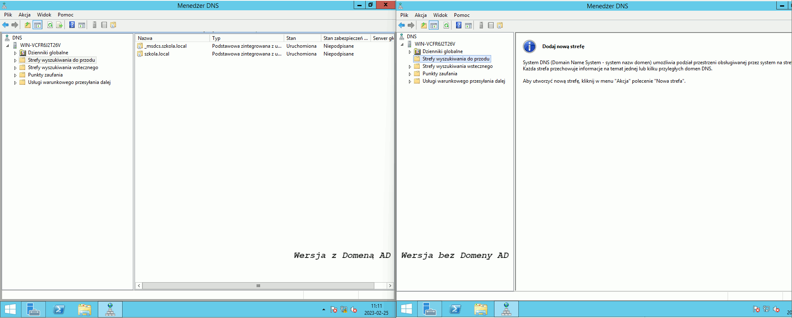
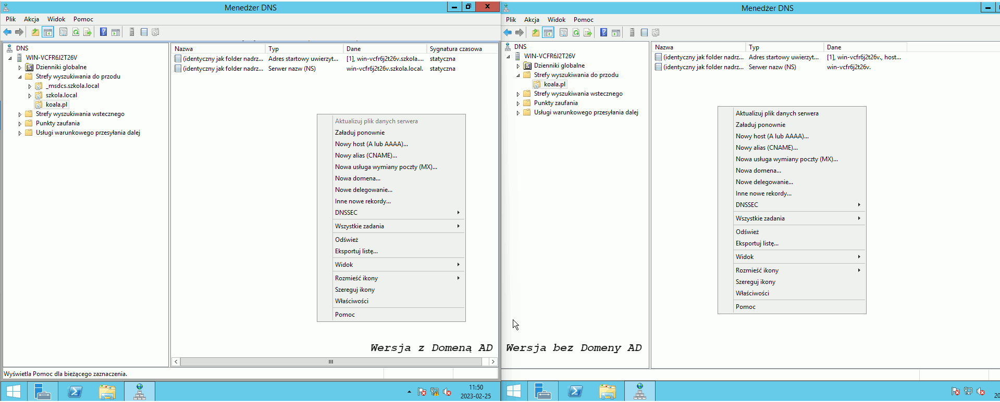
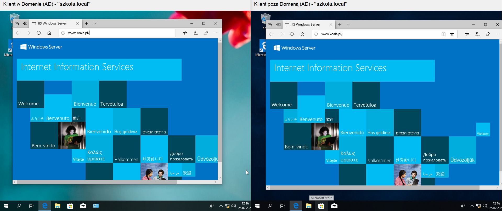
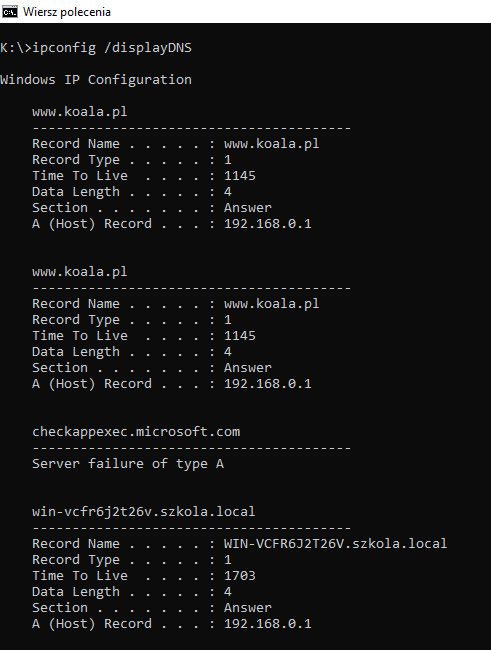
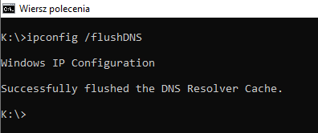

ADMINISTRACJA SYSTEMAMI OPERACYJNYMI / Serwer Web www /part 1 - DNS
DNS pod stronę WwW
Cały proces, można w dużym uproszczeniu zobrazować następująco:1. Użytkownik wpisuje w przeglądarce adres: www.koala.pl.
2. System wysyła zapytanie do znanego mu serwera DNS, z prośbą o wysłanie adresu IP, dla domeny www.koala.pl.
3. Serwer DNS, odsyła do komputera użytkownika adres IP przyporządkowany dla podanej domeny.
4. Komputer użytkownika łączy się ze wskazanym adresem IP wyświetlając stronę. Dodaj i zainstaluj rolę Serwer DNS
Konfiguracja Stref wyszukiwania do przodu i wstecznego trochę się różni gdy serwer jest kontrolerem domeny (AD) od sytuacji gdy owym kontrolerem nie jest. Dlatego poniższy obrazek przedstawia konfigurację w obu przypadkach:  Jak są dodane obie strefy wyszukiwania, to dodaj nowy host A lub AAAA po czym przypisz go do "Adres startowy uwierzytelniania (SOA)". Pamiętaj by zaznaczyć check box "Utwórz skojarzony rekord wskaźnika (PTR)".  Do weryfikacji poprawności działania DNS zainstaluj rolę serwera WwW "Serwer sieci Web (IIS)". Konfiguracja IIS będzie w kolejnym rozdziale.
Czas na weryfikację poprawności działania DNS. (Pamiętaj o ustawieniu statycznego adresu DNS serwera na klientach nie będących w Domenie (AD)).
Na obrazie poniżej przedstawiono poprawne połączenie z domyślną stronią IIS z wykorzystaniem DNS na adres "www.koala.pl" w dwóch wersjach na kliencie będącym w domenie oraz na kliencie nie będącym w domenie:  Możemy sprawdzić informacje o znanych serwerach i domenach oraz sub-domenech DNS: ipconfig /displaydns  Możemy wyczyścić pamięć cashe przechowywującą informacje o znanych serwerach i domenach oraz subdomenach DNS: ipconfig /flushdns 